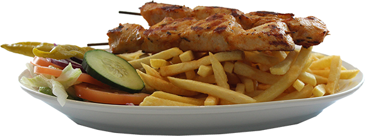
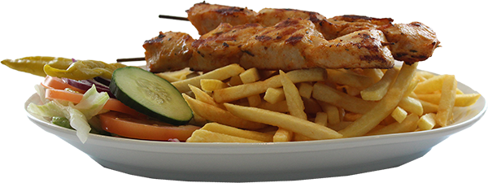

LUNCHMENY
Måndag - Fredag mellan 10:30 - 14:00
KEBABTALLRIK
Med strips, mos, ris eller pasta.
KEBABRULLE
Sallad, tomat, gurka, lök, feferoni, valfri sås.
HAMBURGARTALLRIK 150G
Med strips eller mos.
PIZZA
Valfri pizza
FISH & CHIPS
Med remouladsås
KEBAB MED HEMBAKAT BRÖD
Valfri sås.


 
